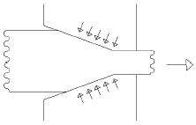

초음파비파괴검사기능사 (2015-01-25 기출문제)
1과목: 초음파탐상시험법
1. 자분탐상시험에서 시험체 외부의 도체로 통전함으로써 자계를 주는 방법은?
- 전류관통법
- 극간법
- 자속관통법
- 축통전법
(정답률: 49%)

2. 침투탐상검사에서 과잉침투액을 제거한 후 시험체를 가열하여 침투액을 팽창시킴으로써 결함지시모양을 형성시키는 방법은?
- 가열현상법
- 팽창현상법
- 무현상법
- 가압현상법
(정답률: 68%)
3. 일반적으로 오스테나이트계 스테인리스강 용접부 검사에서 적용이 불가능한 시험방법은?
- 방사선투과시험
- 자분탐상시험
- 누설탐상시험
- 초음파탐상시험
(정답률: 76%)
4. 다른 비파괴검사법과 비교하여 와전류탐상시험의 특징이 아닌 것은?
- 시험을 자동화할 수 있다.
- 비접촉 방법으로 할 수 있다.
- 시험체의 도금두께 측정이 가능하다.
- 형상이 복잡한 것도 쉽게 검사할 수 있다.
(정답률: 76%)
5. 다음 중 비금속 물질의 표면 불연속을 비파괴검사할 때 가장 적합한 시험법은?
- 자분탐상시험법
- 초음파탐상시험법
- 침투탐상시험법
- 중성자투과시험법
(정답률: 83%)
6. 기포누설시험을 할 때 감도를 저해하는 요소로 가장 거리가 먼 것은?
- 표면오염물
- 부적절한 점도
- 빠른 누설
- 과도한 진공
(정답률: 75%)
7. 강자성체 및 비자성 재료에서도 균열의 깊이 정보를 알 수 있는 비파괴 검사 방법은?
- 와전류 탐상검사
- 자분탐상검사
- 자기기록탐상검사
- 침투탐상검사
(정답률: 66%)
8. 초음파탐상 시험방법에 속하지 않는 것은?
- 공진법
- 외삽법
- 투과법
- 펄스반사법
(정답률: 82%)
9. 와전류탐상시험 기기에서 게인(Gain) 조정 장치의 역할로 옳은 것은?
- 위상(phase) 조정
- 평형(balance) 조정
- 감도(sensitivity) 조정
- 진동수(frequency) 조정
(정답률: 75%)
10. 자분탐상검사에서 자화 방법을 선택할 때 고려해야 할 사항과 거리가 먼 것은?
- 검사환경
- 검사원의 기량
- 시험체의 크기
- 예측되는 결함의 방향
(정답률: 77%)
11. 음향방출검사시 계측순서 중 계측감도의 교정 항목이 아닌 것은?
- 변환자
- 변환자를 접촉한 상태
- 피검체의 음속감속
- 문턱값
(정답률: 75%)
12. 누설검사에 사용되는 가압 기체가 아닌 것은?
- 헬륨
- 질소
- 포스겐
- 공기
(정답률: 80%)
13. 비파괴검사의 목적에 대한 설명과 거리가 먼 것은?
- 결함이 존재하지 않는 완벽한 제품을 생산한다.
- 제품의 결함 유무 또는 결함의 정도를 파악, 신뢰성을 향상시킨다.
- 시험결과를 분석, 검토하여 제조 조건을 보완하므로 제조기술을 발전시킬 수 있다.
- 적절한 시기에 불량품을 조기 발견하여 수리 또는 교체를 통해 제조 원가를 절감한다.
(정답률: 81%)
14. 특성 X-선에 관해 설명한 것 중 틀린 것은?
- 재료의 물성분석에 이용된다.
- 단일 에너지를 가진다.
- 파장은 관전압이 바뀌어도 변하지 않는다.
- 연속 스펙트럼을 가진다.
(정답률: 57%)
15. 다른 조건은 모두 같고 수직탐촉자의 직경이 20mm이면 10mm 직경의 탐촉자보다 근거리음장이 몇 배 증가하는가?
- 8배
- 6배
- 4배
- 2배
(정답률: 68%)
16. 초음파가 제1매질과 제2매질의 경계면에서 진행할 때 파형변환과 굴절이 발생하는데 이때 제2임계각을 가장 적절히 설명한 것은?
- 굴절된 종파가 정확히 90°가 되었을 때
- 굴절된 횡파가 정확히 90°가 되었을 때
- 제2매질 내에 종파와 횡파가 존재하지 않을 때
- 제2매질 내에 종파와 횡파가 같이 존재하게 된 때
(정답률: 63%)
17. 초음파 탐상검사의 주파수에 관한 설명으로 틀린 것은?
- 초음파의 지향성은 주파수가 낮을수록 좋다.
- 서로 근접한 결함의 분리에는 높은 주파수가 좋다.
- 결함 검출능력을 높이는데 주파수가 높은 것이 좋다.
- 탐상면이 거칠 때는 낮은 주파수를 사용하는 것이 좋다.
(정답률: 48%)
18. 분할형 수직탐촉자를 이용한 초음파탐상시험의 특징에 대한 설명으로 틀린 것은?
- 펄스반사식은 두께측정에 이용된다.
- 송수신의 초점은 시험체 표면에서 일정거리에 설정된다.
- 시험체 표면에서 가까운 거리에 있는 결함의 검출에 적합하다.
- 시험체 내의 초음파 진행 방향과 평행한 방향으로 존재하는 결함 검출에 적합하다.
(정답률: 57%)
19. 초음파탐상검사시 많은 수의 작은 지시들, 즉 임상에코를 나타내는 결함은?
- 균열(crack)
- 다공성 기포(porosity)
- 수축관(shrinkage cavity)
- 큰 비금속개재물(inclusion)
(정답률: 79%)
20. 수침법으로 강철판재를 초음파탐상할 때 입사각이 16°라면 강철판재에 존재하는 파는?
- 램파
- 표면파
- 종파
- 횡파
(정답률: 44%)
2과목: 초음파탐상관련규격
21. 펄스 반복비(Phlse repetition rate)는 초음파 탐상기의 기본회로 구성품 중 어느 것과 제일 긴밀한 관계인가?
- 타이머 또는 시계
- 펄스 발생기
- 증폭기
- 필터
(정답률: 58%)
22. 수신되는 초음파를 화면상에 나타내는 방법에 따라 분류할 때 B 주사법에 대한 설명으로 틀린 것은?
- 시험체의 단면을 나타낸다.
- 반사에코 진행시간에 따라 결함의 깊이를 나타낸다.
- 평면 표시법이다.
- 2개의 결함이라도 화면상에 1개로 나타날 수 있다.
(정답률: 50%)
23. 횡파에 대한 설명 중 틀린 것은?
- 공기 중에는 횡파가 존재할 수 없다.
- 고체에서는 종파가 존재한다.
- 음파 진행방향에 대해 수직방향으로 진동한다.
- 액체 내에서는 횡파만이 존재할 수 있다.
(정답률: 66%)
24. 펄스반사법으로 초음파가 탐촉자에서 발생되어 강재의 저면을 거처 다시 탐촉자로 돌아올 때까지 1×10-6초가 소요됐다면 이 강의 두께는 몇 mm인가? (단, 강재 내 초음파 속도는 5000m/s 이며, 초음파의 진행에 따른 감쇠는 없는 것으로 가정한다.)
- 2.5
- 25
- 5
- 50
(정답률: 39%)
25. 다음 표준시험편 중 경사각 탐촉자의 입사점 및 굴절각 측정에 사용할 수 있는 것은?
- STB-A1
- STB-A2
- STB-G
- STB-N1
(정답률: 69%)
26. 초음파탐상시험시 결함의 평면을 파악하기 위한 표시 방식으로 적절한 것은?
- A스캔표시
- B스캔표시
- C스캔표시
- 디지털 표시
(정답률: 64%)
27. 경사각탐상시 종파가 90° 의 굴절각으로 변하며 횡파가 발생될 때의 입사각을 무엇이라 하는가?
- 제 1 임계각
- 제 2 임계각
- 반사각
- 굴절각
(정답률: 50%)
28. 금속재료의 펄스반사법에 따른 초음파탐상 시험방법 통칙(KS B 0817)에서 탐상도형의 표시를 기호로 나타낸 것 중 틀린 것은?
- T : 측면 에코
- F : 흠집 에코
- B : 바닥면 에코
- S : 표면 에코
(정답률: 71%)
29. 강용접부의 초음파탐상 시험방법(KS B 0896)에 의거 판 두께 100mm이하아의 평판 맞대기 이음부를 탐상할 때, 탐상면과 방향은?
- 한면 양쪽
- 한면 한쪽
- 양면 양쪽
- 양면 한쪽
(정답률: 63%)
30. 강용접부의 초음파탐상 시험방법(KS B 0896)에서 요구하는 장치의 증폭 직선성의 허용범위는?
- ±3%이내
- ±4%이내
- ±5%이내
- ±6%이내
(정답률: 74%)
31. 알루미늄의 맞대기 용접부의 초음파 경사각탐상 시험방법(KS B 0897)에 따른 경사각탐촉자의 굴절각 측정에 사용하는 시험편은?
- STB-A1
- RB-A7
- STB-A3
- RB-A4 AL
(정답률: 63%)
32. 압력용기용 강판의 초음파탐상 검사방법(KS D 0233)에 따라 압력용기용 강판을 초음파 탐상할 때 주로 사용하는 접촉 매질은?
- 물
- 글리세린
- 기계유
- 식물유
(정답률: 62%)
33. 금속재료의 펄스반사법에 따른 초음파탐상 시험방법 통칙(KB B 0817)에 따라 시험 결과를 평가하는 경우 고려할 항목과 거리가 먼 것은?
- 흠집의 에코 높이
- 등가 결함 지름
- 흠집의 지시 길이
- 표준시험편의 감도
(정답률: 58%)
34. 강용접부의 초음파탐상 시험방법(KS B 0896)에서 A2 표준시험편으로 탐상장치의 감도보정을 할 때 판 표면에서 초음파가 진행하여 반대면에서 나오는 배면반사가 전스케일의 몇 %가 되도록 투과펄스의 높이를 조절하여야 하는가?
- 10%
- 25%
- 50%
- 80%
(정답률: 50%)
35. 비파괴시험 용어(KS B ⑤50)에 따른 경사각탐상에서 탐촉자-용접부 거리를 일정하게 하고 탐촉자를 용접선에 평행하게 이동시키는 주사 방법을 무엇이라 하는가?
- 전후주사
- 좌우주사
- 목돌림주사
- 지그재그주사
(정답률: 67%)
36. 강용접부의 초음파탐상 시험방법(KS B 0896)에서 수직 탐촉자를 사용하는 경우 빔 노정이 몇 이상인 경우에는 불감대를 특별히 규정하지 않는가?
- 30mm
- 40mm
- 50mm
- 60mm
(정답률: 43%)
37. 강관의 초음파탐상검사 방법(KS D 0250)에서 비교시험편의 인공 홈의 종류에 해당되지 않는 것은?
- 각 홈
- U 홈
- V 홈
- 드릴 구멍
(정답률: 57%)
38. 초음파 탐상시험용 표준시험편(KS B0831)에서 G형 표준시험편의 검정조건 및 검정방법에 관한 설명으로 옳은 것은?
- 반사원은 R100면 또는 R50면으로 한다
- 주파수는 2(또는 2.25), 5 및 10MHz 이다.
- 측정방법은 검정용 기준편에서만 1회 실시한다.
- 리젝션의 감도는 “0” 또는 “온(ON)”으로 한다.
(정답률: 65%)
39. 탄소강 및 저합금강 단강품의 초음파탐상 시험방법(KS D 0248)의 시험조건 중에 탐촉자의 주사속도는 얼마인가?
- 초당 150mm 이하
- 초당 180mm 이하
- 초당 200mm 이하
- 초당 250mm 이하
(정답률: 40%)
40. 압력용기용 강판의 초음파탐상 검사방법(KS D 0233)에 따른 비교시험편을 제작할 때 각 홈에 대한 설명으로 틀린 것은?
- 나비는 1.5mm 이하로 한다.
- 각도는 60도로 한다.
- 길이는 진동자 공칭 치수의 2배 이상으로 한다.
- 깊이의 허용차는 ± 15% 또는 ± 0.⑤mm 중 큰 것으로 한다.
(정답률: 48%)
3과목: 금속재료일반 및 용접일반
41. 강용접부의 초음파탐상 시험방법(KS B 0896)에서 에코 높이 구분선을 작성할 때 H, M, L선의 결정시에 H선보다 몇 dB 낮은 선을 L선으로 하는가?
- 6dB
- 12dB
- 18dB
- 24dB
(정답률: 75%)
42. 알루미늄의 맞대기 용접부의 초음파경사각탐상 시험방법(KS B 0897)에서 규정하고 있는 흠의 지시 길이의 측정 시 올바른 주사 방법은?
- 최대 에코를 나타내는 위치에 탐촉자를 놓고 좌우주사를 한다.
- 최대 에코를 나타내는 위치에 탐촉자를 놓고 목 진동주사를 한다.
- 최소 에코를 나타내는 위치에 탐촉자를 놓고 전후주사만을 한다.
- 최소 에코를 나타내는 위치에 탐촉자를 놓고 원둘레 주사를 한다.
(정답률: 70%)
43. 용융금속을 주형에 주입할 때 응고하는 과정을 설명한 것으로 틀린 것은?
- 나뭇가지 모양으로 응고하는 것을 수지상정이라 한다.
- 핵 생성 속도가 핵 성장 속도보다 빠르면 입자가 미세해진다.
- 주형에 접한 부분이 빠른 속도로 응고하고 차차 내부로 가면서 천천히 응고한다.
- 주상 결정 입자 조직이 생성된 주물에서는 주상결정입내 부분에 불순물이 집중하므로 메짐이 생긴다.
(정답률: 65%)
44. 4%Cu, 2%Ni 및 1.5%Mg 이 첨가된 알루미늄 합금으로 내연기관용 피스톤이나 실린더 헤드 등에 사용되는 재료는?
- Y 합금
- 라우탈(lautal)
- 알클래드(alclad)
- 하이드로날륨(hydronalium)
(정답률: 80%)
45. 구리 및 구리 합금에 대한 설명으로 옳은 것은?
- 구리는 자성체이다.
- 금속 중에 Fe 다음으로 열전도율이 높다.
- 황동은 주로 구리와 주석으로 된 합금이다.
- 구리는 이산화탄소가 포함되어 있는 공기 중에서 녹청색 녹이 발생한다.
(정답률: 64%)
46. Y 합금의 일종으로 Ti 과 Cu를 0.2% 정도씩 첨가한 합금으로 피스톤에 사용되는 합금의 명칭은?
- 라우탈
- 엘린바
- 문쯔메탈
- 코비탈륨
(정답률: 57%)
47. 다음 중 비중(specific gravity)이 가장 작은 금속은?
- Mg
- Cr
- Mn
- Pb
(정답률: 86%)
48. 특수강에서 다음 금속이 미치는 영향으로 틀린 것은?
- Si : 전자기적 성질을 개선한다.
- Cr : 내마멸성을 증가시킨다.
- Mo : 뜨임메짐을 방지한다.
- Ni : 탄화물을 만든다.
(정답률: 62%)
49. 공석강의 탄소함유량은 약 얼마인가?
- 0.15%
- 0.8%
- 2.0%
- 4.3%
(정답률: 65%)
50. 제진 재료에 대한 설명으로 틀린 것은?
- 제진 합금으로는 Mg-Zr, Mn-Cu 등이 있다.
- 제진 합금에서 제진 기구는 마텐자이트 변태와 같다.
- 제진 재료는 진동을 제어하기 위하여 사용되는 재료이다.
- 제진 합금이란 큰 의미에서 두드려도 소리가 나지 않는 합금이다.
(정답률: 55%)
51. 저용융점 합금의 용융 온도는 약 몇 ℃ 이하 인가?
- 250℃ 이하
- 450℃ 이하
- 550℃ 이하
- 650℃ 이하
(정답률: 70%)
52. 금속의 결정구조를 생각할 때 결정면과 방향을 규정하는 것과 관련이 가장 깊은 것은?
- 밀러지수
- 탄성계수
- 가공지수
- 전이계수
(정답률: 68%)
53. 기체 급랭법의 일종으로 금속을 기체 상태로 한 후에 급랭 하는 방법으로 제조되는 합금으로서 대표적인 방법은 진공 증착법이나 스퍼터링법 등이 있다. 이러한 방법으로 제조되는 합금은?
- 제진 합금
- 초전도 합금
- 비정질 합금
- 형상 기억합금
(정답률: 63%)
54. 그림과 같은 소성 가공법은?

- 압연가공
- 단조가공
- 인발가공
- 전조가공
(정답률: 70%)
55. 오스테나이트계 스테인리스강에 첨가되는 주성분으로 옳은 것은?
- Pb-Mg
- Cu-Al
- Cr-Ni
- P-Sn
(정답률: 69%)
56. 다음 비철금속 중 구리가 포함되어 있는 합금이 아닌 것은?
- 황동
- 톰백
- 청동
- 하이드로날륨
(정답률: 73%)
57. 다음 철강 재료에서 인성이 가장 낮은 것은?
- 회주철
- 탄소공구강
- 합금공구강
- 고속도공구강
(정답률: 71%)
58. 다음 중 두께가 3.2mm인 연강 판을 산소·아세틸렌가스 용접할 때 사용하는 용접봉의 지름은 얼마인가?
- 1.0mm
- 1.6mm
- 2.0mm
- 2.6mm
(정답률: 55%)
59. 부하전류가 증가하면 단자 전압이 저하하는 특성으로서 피복아크 용접 등 수동 용접에서 사용하는 전원특성은?
- 정전압특성
- 수하특성
- 부하특성
- 상승특성
(정답률: 53%)
60. 다음 중 압접의 종류에 속하지 않은 것은?
- 저항 용접
- 초음파 용접
- 마찰 용접
- 스터드 용접
(정답률: 69%)